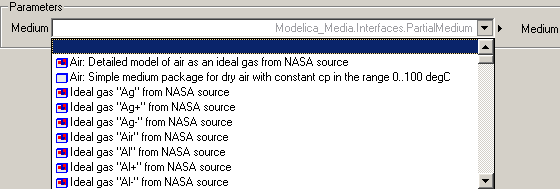

BasicUsageBasic usage |
|
Information
This information is part of the Modelica Standard Library maintained by the Modelica Association.
Basic usage of medium model
Media models in Modelica.Media are provided by packages, inheriting from the partial package Modelica.Media.Interfaces.PartialMedium. Every package defines:
- Medium constants (such as the number of chemical substances, molecular data, critical properties, etc.).
- A BaseProperties model, to compute the basic thermodynamic properties of the fluid;
- setState_XXX functions to compute the thermodynamic state record from different input arguments (such as density, temperature, and composition which would be setState_dTX);
- Functions to compute additional properties (such as saturation properties, viscosity, thermal conductivity, etc.).
There are - as stated above - two different basic ways of using the Media library which will be described in more details in the following section. One way is to use the model BaseProperties. Every instance of BaseProperties for any medium model provides 3+nXi equations for the following 5+nXi variables that are declared in the medium model (nXi is the number of independent mass fractions, see explanation below):
| Variable | Unit | Description |
| T | K | temperature |
| p | Pa | absolute pressure |
| d | kg/m3 | density |
| u | J/kg | specific internal energy |
| h | J/kg | specific enthalpy (h = u + p/d) |
| Xi[nXi] | kg/kg | independent mass fractions m_i/m |
| X[nX] | kg/kg | All mass fractions m_i/m. X is defined in BaseProperties by: X = if reducedX then vector([Xi; 1-sum(Xi)]) else Xi |
Two variables out of p, d, h, or u, as well as the mass fractions Xi are the independent variables and the medium model basically provides equations to compute the remaining variables, including the full mass fraction vector X (more details to Xi and X are given further below).
In a component, the most basic usage of a medium model is as follows
model Pump
replaceable package Medium = Modelica.Media.Interfaces.PartialMedium
"Medium model" annotation (choicesAllMatching = true);
Medium.BaseProperties medium_a "Medium properties at location a (e.g., port_a)";
// Use medium variables (medium_a.p, medium_a.T, medium_a.h, ...)
...
end Pump;
The second way is to use the setState_XXX functions to compute the thermodynamic state record from which all other thermodynamic state variables can be computed (see Basic definition of medium for further details on ThermodynamicState). The setState_XXX functions accept either X or Xi (see explanation below) and will decide internally which of these two compositions is provided by the user. The four fundamental setState_XXX functions are provided in PartialMedium
| Function | Description | Short-form for single component medium |
| setState_dTX | computes ThermodynamicState from density, temperature, and composition X or Xi | setState_dT |
| setState_phX | computes ThermodynamicState from pressure, specific enthalpy, and composition X or Xi | setState_ph |
| setState_psX | computes ThermodynamicState from pressure, specific entropy, and composition X or Xi | setState_ps |
| setState_pTX | computes ThermodynamicState from pressure, temperature, and composition X or Xi | setState_pT |
The simple example that explained the basic usage of BaseProperties would then become
model Pump
replaceable package Medium = Modelica.Media.Interfaces.PartialMedium
"Medium model" annotation (choicesAllMatching = true);
Medium.ThermodynamicState state_a "Thermodynamic state record at location a (e.g., port_a)";
// Compute medium variables from thermodynamic state record (pressure(state_a), temperature(state_a),
// specificEnthalpy(state_a), ...)
...
end Pump;
All media models are directly or indirectly a subpackage of package Modelica.Media.Interfaces.PartialMedium. Therefore, a medium model in a component should inherit from this partial package. Via the annotation "choicesAllMatching = true" it is defined that the tool should display a selection box with all loaded packages that inherit from PartialMedium. An example is given in the next figure:

A selected medium model leads, e.g., to the following equation:
Pump pump(redeclare package Medium = Modelica.Media.Water.SimpleLiquidWater);
Usually, a medium model is associated with the variables of a fluid connector. Therefore, equations have to be defined in a model that relate the variables in the connector with the variables in the medium model:
model Pump
replaceable package Medium = Modelica.Media.Interfaces.PartialMedium
"Medium model" annotation (choicesAllMatching = true);
Medium.BaseProperties medium_a "Medium properties of port_a";
// definition of the fluid port port_a
...
equation
medium.p = port_a.p;
medium.h = port_a.h;
medium.Xi = port_a.Xi;
...
end Pump;
in the case of using BaseProperties or
model Pump
replaceable package Medium = Modelica.Media.Interfaces.PartialMedium
"Medium model" annotation (choicesAllMatching = true);
Medium.ThermodynamicState state_a "Thermodynamic state record of medium at port_a";
// definition of the fluid port port_a
...
equation
state_a = Medium.setState_phX(port_a.p, port_a.h, port_a.Xi) // if port_a contains the variables
// p, h, and Xi
...
end Pump;
in the case of using ThermodynamicState.
If a component model shall treat both single and multiple substance fluids, equations for the mass fractions have to be present (above: medium.Xi = port_a.Xi) in the model. According to the Modelica semantics, the equations of the mass fractions are ignored, if the dimension of Xi is zero, i.e., for a single-component medium. Note, by specific techniques sketched in section "Medium definition", the independent variables in the medium model need not to be the same as the variables in the connector and still get the same efficiency, as if the same variables would be used.
If a fluid consists of a single substance, nXi = 0 and the vector of mass fractions Xi is not present. If a fluid consists of nS substances, the medium model may define the number of independent mass fractions nXi to be nS, nS-1, or zero. In all cases, balance equations for nXi substances have to be given in the corresponding component (see discussion below). Note, that if nXi = nS, the constraint "sum(Xi)=1" between the mass fractions is not present in the model; in that case, it is necessary to provide consistent start values for Xi such that sum(Xi) = 1.
The reason for this definition of Xi is that a fluid component library can be implemented by using only the independent mass fractions Xi and then via the medium it is defined how Xi is interpreted:
- If Xi = nS, then the constraint equation sum(X) = 1 is neglected during simulation. By making sure that the initial conditions of X fulfill this constraint, it can usually be guaranteed that small errors in sum(X) = 1 remain small although this constraint equation is not explicitly used during the simulation. This approach is usually useful if components of the mixture can become very small. If such a small quantity is computed via the equation 1 - sum(X[1:nX-1]), there might be large numerical errors and it is better to compute it via the corresponding balance equation.
- If Xi = nS-1, then the true independent mass fractions are used in the fluid component and the last component of X is computed via X[nX] = 1 - sum(Xi). This is useful for, e.g., MoistAir, where the number of states should be as small as possible without introducing numerical problems.
- If Xi = 0, then the reference value of composition reference_X is assumed. This case is useful to avoid composition states in all the cases when the composition will always be constant, e.g., with circuits having fixed composition sources.
The full vector of mass fractions X[nX] is computed in PartialMedium.BaseProperties based on Xi, reference_X, and the information whether Xi = nS or nS-1. For single-substance media, nX = 0, so there's also no X vector. For multiple-substance media, nX = nS, and X always contains the full vector of mass fractions. In order to reduce confusion for the user of a fluid component library, "Xi" has the annotation "HideResult=true", meaning, that this variable is not shown in the plot window. Only X is shown in the plot window and this vector always contains all mass fractions.